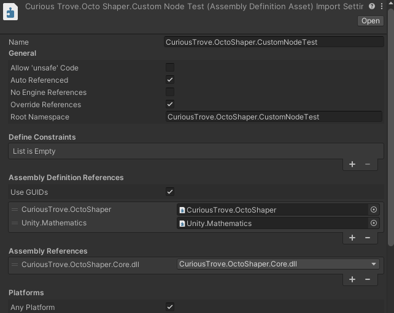

Creating Custom Nodes
A custom node is a static C# method that OctoShaper exposes in the node browser. Use one when a project-specific rule is clearer as a reusable graph operation than as a long chain of general-purpose nodes.
Mental model
A method becomes a graph operation
Prepare a custom node assembly
- Create a runtime assembly definition for the scripts that will contain your nodes.
- Reference the CuriousTrove.OctoShaper assembly and the CuriousTrove.OctoShaper.Core.dll precompiled assembly. Add Unity Mathematics if your nodes use its types.
- Open Project Settings > OctoShaper and add the exact assembly name under Custom Node Assemblies.
- Wait for the validation message to confirm that the assembly loads and contains at least one node definition.
Why use a dedicated assembly?
Generated graph code is compiled in its own assembly. A dedicated assembly definition gives OctoShaper a stable reference to your custom node methods in both the editor and player builds.

Write an ElementSet mutator
This node raises the existing position column. It does not create or replace rows, so it mutates the incoming ElementSet in place and returns void.
namespace MyGame.Procedural
{
using CuriousTrove.OctoShaper.Core.Data;
using CuriousTrove.OctoShaper.Core.Providers;
public static class LandscapeNodes
{
[NodeDefinition(
Id = "mygame.landscape.raise-height",
Name = "Raise Height",
CategoryId = "Custom>Landscape",
Description = "Moves every element upward.",
RequiredElementAttributes = new[] { "position" },
ProvidedElementAttributes = new[] { "position" })]
public static void RaiseHeight(
ElementSet elements,
[NodeInput(Name = "Height", Description = "World-space vertical offset")]
[NodeSlider(-10d, 10d)] float height = 1f)
{
if (elements == null ||
!elements.TryGetColumn(Attributes.Position, out var positions))
{
return;
}
for (int i = 0; i < positions.Count; i++)
{
var position = positions.GetValue(i);
position.y += height;
positions.SetValue(i, position);
}
}
}
}Keep the node ID globally unique and stable. Existing graph assets store that ID, so changing it later makes the old node definition unavailable.
Understand the method contract
| C# declaration | Graph behavior |
|---|---|
NodeDefinition | Defines the ID, display name, category, description, and ElementSet attribute contract. |
| Method parameter | Becomes a typed node input. A C# default value becomes the initial value shown in the graph. |
NodeInput | Overrides the input name or description and can describe dynamic attribute-name inputs. |
| Return value | Becomes the node output. Use NodeOutput when it needs a clearer name or description. |
NodeMin, NodeMax, NodeRange, NodeSlider | Constrain numeric editing or present a bounded slider. |
Prefer types that OctoShaper already exposes in graphs. Array parameters and array return values are not discovered as node definitions.
Mutating and structural nodes are different
Mutator
Keep the same ElementSet
Receive an ElementSet, edit its columns, and normally return void. Declare the attributes the node requires and provides so the graph can validate connections.
Structural
Replace the flowing ElementSet
When a node adds, removes, duplicates, or reorganizes rows by returning another set, mark the method with NodeStructural. OctoShaper then uses the returned set downstream.
The required/provided attribute lists describe graph compatibility; they are not a substitute for defensive checks inside the method. A custom node should still handle null inputs and missing columns safely.
Make the node available at runtime
- Confirm the node appears in the expected node-browser category.
- Add it to a graph and verify its ports and defaults before building more graphs around it.
- Run Tools > OctoShaper > Generate Graph Code, or leave automatic regeneration enabled.
- Keep custom nodes out of editor-only assemblies and avoid dependencies that are unavailable in player builds.
If a node disappears
Check the assembly name first, then verify that the method is static, has a NodeDefinition, uses supported graph types, and still has the same stable ID. Regenerate graph code after correcting the definition.
Keep custom nodes easy to use
- Give inputs graph-facing names and descriptions instead of exposing implementation terminology.
- Use sensible defaults so a newly created node already produces a meaningful result.
- Keep one clear responsibility per node; compose larger behaviors in the graph.
- Link attribute-heavy nodes back to the Elements mental model and use the Node Catalog as a reference for OctoShaper's built-in conventions.